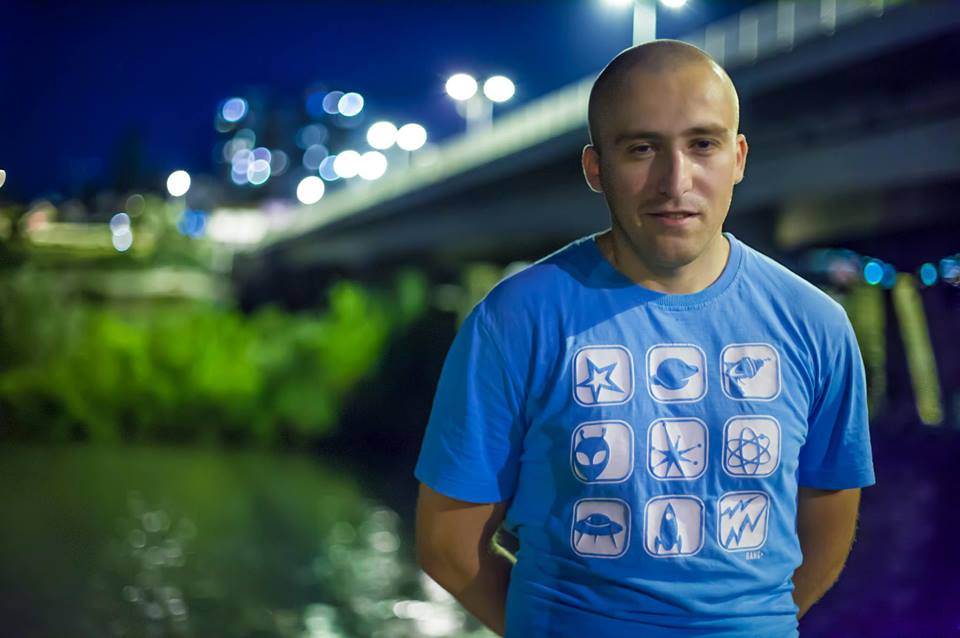
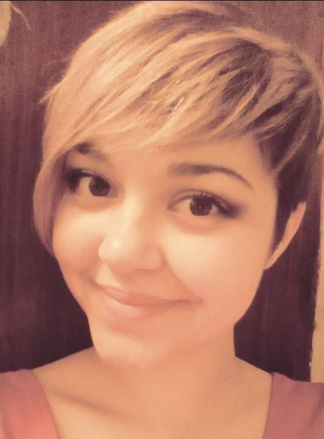
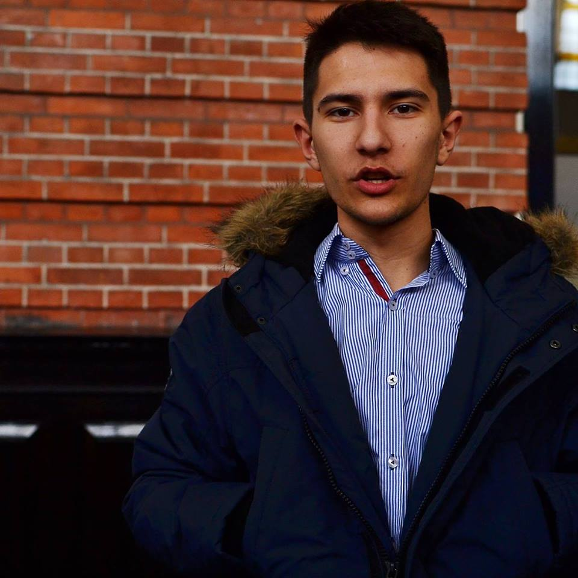

Вук Цветковић Вукса
Портрет
Понекад само хтео бих негде да побегнем, да оставим баш све, на папиру речи последње. Mоје последње збогом овом свету и људима, све што имам сам дао, све је остало у песмама. Шта ће ми новац, све бих спалио и пошао, тамо негде далеко где још нико није био, знам да срећа је стварна ако је делиш са неким, ја своју срећу сам тражио, док своје битке сам био. Можеш да читаш моје речи, да чујеш шта осећам, aли никада нећеш да видиш свет овим мојим очима. Свој дар носим к'о клетву, мој мач је моја оловка, ноћу прогоне ме сенке старих људи и одлука. Кад ништа немаш на свету, реци шта можеш да изгубиш? У глави створиш ту слику да ти ти вечити победник. Па ређаш успехе, гледаш шта су други постигли, и све то буде ти мало, желиш још више да покупиш. Понекад гадим се себе, кад видим шта су ми жеље. Где је нестао тај мали? Где je нестало то време? Нисам од оних што жале и желе у дане лепе, али било је другачије када био сам дете. Све што имам је слика особе какава сам био, све што имам су песме, у њима је живот цео. Све што имам су речи, стари не остварени снови, ПУСТИ САЊАРА ДА САЊА, СВРХА БРОДА ЈЕ ДА ПЛОВИ! Да осети таласе, да носи га дивље море, мирна лука је за лађе које никада не плове, некад ветар му пуни једра док одлази у даљине, НЕ БУДИ САЊАРА, ЈЕР СВЕ ШТО ИМА СУ СНОВИ! *** Зато пусти ме сада, мој је живот у песмама, моју причу носи ветар, тужног заљубљеног песника. А све се врати ОСИМ ВРЕМЕНА, осим тих година, оне живе у нама, зато постоје сећања. Кистом цртао сам осмех, акрилом бојио живот, а све што имам сада слика је како је некад било. Стари уместо мене, време за њу је стало давно, ако икада погледам у њу пућиће платно. Однеће мирисе пролећа, нестаће летња јутра, а она ће и даље зоре чекати будна. До касних јесењих ноћи када зима замирише, све док не падну снегови, да јој порију трагове. Од речи настаће потреси, загрмеће облаци, сви вулкани ће прорадити, сва мора ће нестати. Време ће стати на трен, а затим кренути у назад, ВЕТРОВИ ПЕВАЋЕ ПЕСМУ О ЧОВЕКУ КОЈИ САЊА! Оловни војници маршираће да је пронађу, нек планине се покрену, нек је вулкани сакрију, нек је покрију снегови, само да је заборавим, само храбрости треба ми... *** И док гледам у слику платно се кида на пола, боје нестају у мраку, са њима нестаје и она. Живот се враћа у назад, слике пролазе пред очима, све што остало скица је детета прозирног погледа. Хиљаду корака воде до врха, а понекад један је довољан да те баци до дна, гледам ту слику без рама, гледам човека без лица, гледам ту сенку... ТАЈ ЧОВЕК САМ ЈА!

Сара Јовановић
Савршена песма
Касно у ноћи ја склапам стих савршено бучан, савршено тих, Савршено звучан, савршено нем, савршено будан, савршено снен. Све сама савршенства на папиру пишем. Савршене сузе савршено бришем. Јер само су песме скроз савршене и само су сузе још непресушене. Само су људи савршено криви и само су мртви савршено живи. У моме су срцу савршене ране од људи што их красе савршене мане. Мени је блиска савршеност свака зато и песма мора вити таква. Ако ми је нека несавршена, та песма и није завршена. Савршено пишем док сам савршено будна. Савршено дишем савршено чудна. И сунце се буди сјајно савршено и све је моје сад завршено. Савршено крепа и душа и тело ал` остаје моје савршено дело.Једном у животу овај дан је данас
Једном у животу овај дан је данас, једном у животу он подсећа на нас. Он пао је тамо где смо и ми пали, он стао је тамо где и ми смо стали, али он је знао што ми нисмо знали, он дао је више него што ми смо дали. Родио се млад и снажан, умислио да је важан Могао је чак бити и срећан, ал' пожеле живот вечан. У тој својој жељи до мрака је горео, док на крају у њој није изгорео. Бар последњу мисао лепо састави и све своје другоме остави. Када већ не може вечно истрајати, своју снагу он ће новом јутру дати. Зато, пре него преплаве нас туге, оставимо и ми љубав за друге. Једном у животу овај дан је данас, једном у животу он подећа на нас. Он подиже главу... Хоћемо ли и ми? Он одлази заувек... Одлазиш ли и ти?Опрости
Хајде. Опрости. Није тешко и само понекад боли, ал’ само мало, као кад ветар ломи кости. Замоли. И то је лако, рећи сву бол у срцу као и сваку другу небитну ствар. То није дар. То може свако. Јер све то само су речи, празне и штуре, небитне и ситне, а могу смирити океане и изазвати буре, јер то нису само речи. То су патње и туге, лажни осмеси и праве сузе, крупнеи слане, а против њих се не може, нема друге, то не може да стане. То су наших срца трептаји, јер у истом ритму вечно куцају и исте речи у њима се смуцају. И то су наших гласова уздрхтаји, јер гласне жице исто нам трепере и само оне могу да мере колико боли кад глас затаји. А кад заболи свака кост, срце се следи, глас пресече и крв престане да тече, то је опрост. Зато опрости, јер јесте тешко и свака реч заболи. Стегни срце и премости, преболи.

Maртин Пантовић
Твоја уста
Спреман руке раширим, сваког Човека доброг да загрлим Спреман прса потурим пред каму најоштрију ако ли ка невиноме иде и спреман страх од туђег мача пред битку отклоним али увек страха у себи задржим да нећу више додирнути твоја уста пред којим и највећи јунаци ничице падаше јер још није било срца довољно јаког ни главе довољно мудре да успe да не гледа твоја уста која живот нови у себи носе било је хаџија који су градове куповали бриљантно прстење на руци носили и сувим златом плаћали слуге и слушкиње па опет не имађаше довољно дуката да проспу пред твоја уста испред којих и највећи мудраци заћуташе Јак сам ја, сузу да сакријем Јак осуду да издржим Завист да заборавим Јак сам ја, брату да опростим Грех да поднесем Али нисам јак Довољно да престанем Да идем куда кажу Твоја уста За која су цареви војске дизали И битке војевали И умирали стрелом погођени А умирући викали: „Мање ова Стрела боли него Твоја уста У која су и анђели заљубљени“ О, заклињем те, кћери земаљска, Срнама и кошутама пољским Буди ми љубав док ти је воља па макар и Творцу твоме не годило јер нема те ватре која ће спречити да желим твоја уста Осетиш ли моћ Разумеш ли пламен Видиш ли круг живота Који гаје Твоја уста Не гледај ме у очи Које ће одати Не дирај ми руке Које ће издати Већ само слушај моје речи Слушај лажљиве моје речи Које ће одушевити И дозволи ми круг да наставим и заимам још једном Твоја уста Не гледај ме у очи Које ће одати Не дирај ми руке Које ће издати Већ само слушај моје речи Слушај лажљиве моје речи Које ће одушевити И дозволи ми круг да наставим и заимам још једном Твоја уста